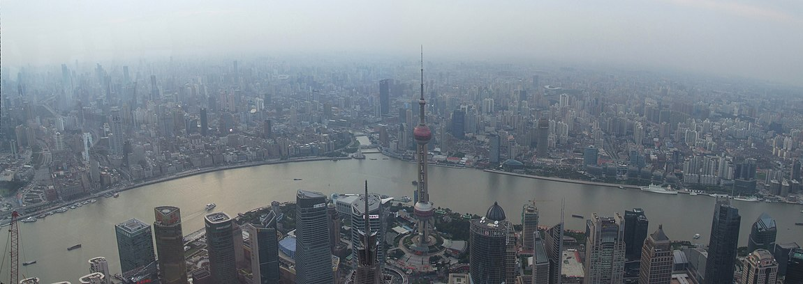

Located on the eastern coast of China, Shanghai is a vibrant city that showcases the country's economic prowess and cultural heritage. Strategically positioned at the mouth of the Yangtze River Delta, it has become a major global financial center and a crucial hub for international trade. With a population exceeding 26 million, Shanghai is not only China's most populous city but also one of the world's most densely populated urban areas. Its cosmopolitan atmosphere attracts people from all walks of life, creating a diverse and dynamic community. The city's skyline is a testament to its blend of history and modernity, featuring colonial-era buildings alongside cutting-edge skyscrapers like the Oriental Pearl Tower and the Shanghai World Financial Center. Divided by the Huangpu River, Shanghai comprises Pudong, known for its futuristic skyscrapers, and Puxi, characterized by its historic neighborhoods and scenic waterfront promenades. The city's extensive metro system efficiently connects these districts, facilitating transportation across its sprawling urban landscape. Beyond the cityscape, Shanghai offers natural attractions such as Chongming Island, which boasts picturesque wetlands and tranquil countryside. Culturally, Shanghai thrives with its museums, galleries, theaters, and art centers that showcase both Chinese and international art and performances. From traditional Chinese opera to contemporary exhibitions, the city's cultural scene is vibrant and ever-evolving. Shanghai's strategic location, bustling population, impressive architecture, efficient transportation, natural beauty, and vibrant cultural offerings make it a captivating destination that seamlessly blends tradition and modernity. Whether you're a history enthusiast, a business traveler, or a culture aficionado, Shanghai has something to offer for everyone.
Flowing through the heart of Shanghai, the Huangpu River holds a significant place in the city's landscape and history. This iconic river serves as a lifeline, dividing Shanghai into its two distinct areas: Pudong and Puxi. Pudong, located on the eastern bank, is renowned for its futuristic skyline, dominated by towering skyscrapers that symbolize Shanghai's modernity and economic prowess. The breathtaking sight of landmarks like the Oriental Pearl Tower and the Shanghai World Financial Center showcases the city's architectural brilliance. On the western bank lies Puxi, characterized by its charming historic neighborhoods and picturesque waterfront promenades. Strolling along the Bund, a renowned waterfront stretch, visitors are treated to a remarkable juxtaposition of old and new, with grand colonial-era buildings standing in harmony with contemporary structures across the river. The Huangpu River also plays a vital role in Shanghai's transportation system, with numerous ferries and river cruises offering panoramic views of the city's skyline. At night, the river comes alive with dazzling lights illuminating the buildings and bridges, creating a captivating spectacle. Moreover, the Huangpu River holds cultural and historical significance, having witnessed Shanghai's transformation from a fishing village to a global metropolis. It serves as a symbol of the city's growth and resilience, reflecting its ability to blend tradition and progress seamlessly. Whether it's admiring the architectural wonders, enjoying a leisurely boat ride, or appreciating the river's historical importance, the Huangpu River is a must-visit destination that encapsulates the essence of Shanghai's charm and dynamism.
Located at the mouth of the Yangtze River in Shanghai, Yangshan Deepwater Port is a remarkable engineering feat and a critical hub for international trade. As the world's largest deepwater port, it has revolutionized maritime transportation and played a pivotal role in solidifying Shanghai's status as a global shipping center. Situated on Yangshan Island, the port boasts a strategic location that provides direct access to the East China Sea, making it an ideal gateway for vessels entering and exiting the region. With its advanced infrastructure and cutting-edge facilities, Yangshan Deepwater Port can accommodate the largest container ships in the world, offering unparalleled efficiency and capacity for cargo handling. The port's impressive automation systems and state-of-the-art equipment ensure smooth operations, optimizing the flow of goods and reducing turnaround times. Its extensive container terminal network is seamlessly connected through a well-developed logistics system, facilitating the transportation of goods throughout the Yangtze River Delta and beyond. Yangshan Deepwater Port's strategic significance extends beyond its size and efficiency. It serves as a crucial link in the Belt and Road Initiative, promoting international trade and fostering economic cooperation between China and countries along the maritime Silk Road. The port's influence extends to various industries, including manufacturing, logistics, and distribution, attracting businesses and investors from around the world. Moreover, the port's commitment to sustainability is evident through its eco-friendly practices, such as utilizing renewable energy sources and implementing measures to reduce environmental impact. In conclusion, Yangshan Deepwater Port represents the epitome of maritime innovation and logistical excellence. With its strategic location, cutting-edge infrastructure, and commitment to sustainability, the port continues to shape the global shipping industry and contribute significantly to Shanghai's position as a key player in international trade.

The Bund, also known as Waitan or the waterfront, is a historic and iconic area located in central Shanghai, China. Situated along the western bank of the Huangpu River, the Bund offers stunning panoramic views of Shanghai's modern skyline on one side and the classic architectural gems of the past on the other. The area is renowned for its majestic buildings that showcase a mix of architectural styles, including Gothic, Renaissance, and Art Deco. These grand structures, once housing major banks and trading houses, stand as a testament to Shanghai's prosperous history as a global financial center. The Bund's promenade is a popular destination for both locals and tourists, who stroll along the riverside, enjoying the fresh breeze and soaking in the mesmerizing sights. The Bund is also home to various cultural and entertainment venues, luxury hotels, and fine dining establishments, offering visitors a wide range of experiences. At night, the entire area comes alive with the illuminations of the buildings and the dazzling lights of the city skyline, creating a captivating and enchanting atmosphere. The Bund represents the convergence of Shanghai's past, present, and future, serving as a symbol of the city's economic development and architectural splendor. It is a must-visit destination that showcases the vibrant history, culture, and allure of Shanghai, leaving visitors with a lasting impression of this cosmopolitan metropolis.
Lujiazui, located in the Pudong district of Shanghai, is a bustling financial district that has transformed into a prominent symbol of Shanghai's modernity and urban development. Situated on the eastern bank of the Huangpu River, Lujiazui is known for its awe-inspiring skyline dominated by towering skyscrapers and futuristic architecture. The area is home to some of the tallest and most iconic buildings in Shanghai, including the Shanghai World Financial Center, Jinmao Tower, and the Oriental Pearl Tower. These architectural marvels showcase a blend of contemporary design styles, seamlessly integrating glass, steel, and concrete into their structures. Lujiazui's strategic location at the bend of the Huangpu River offers breathtaking views of both sides of Shanghai, with the historic Bund and its architectural heritage visible across the water. The district's geographical positioning and the river's curve have contributed to its unique urban layout, creating an impressive panorama of modernity and progress. Lujiazui's infrastructure is well-developed, with efficient transportation networks, including multiple subway lines and bridges that connect it to other parts of Shanghai. The district also features beautifully landscaped parks and open spaces, providing residents and visitors with a pleasant environment to relax and enjoy the surrounding cityscape. Lujiazui's combination of cutting-edge architecture, strategic location, and picturesque surroundings make it a must-visit destination for those seeking to experience the vibrant and contemporary side of Shanghai.